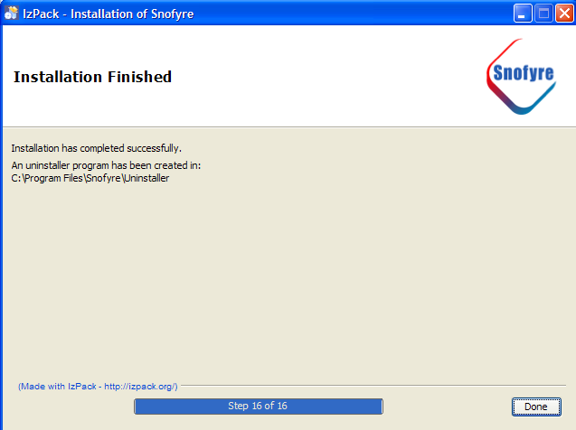

SNOMED CT, Java and MySQL are registered trademarks
In the final step, Snofyre installer displays a Finish panel and an optional Shortcuts panel. These are displayed as the ultimate and penultimate steps of the installation process respectively.
-
During the final steps of installation, the installer displays some optional paenls, depending on the
user's operating system.
- If the user's operating system is Windows, then the installer displays a
Shortcuts Panel as shown below. The user can then choose to create a
Desktop shortcut by selecting Create additonal shortcuts on Desktop. The
user can also choose to install Snofyre for all users on the system, by selecting the
all users option as shown below.

- If the user's operating system is not Windows, then the Shortcuts Panel is not displayed.
Important: The installer by default creates a shortcut to the run.bat file for launching Snofyre. We recommending replacing this shortcut with a shortcut to the Snofyre.exe executable located in the INSTALLATION_FOLDER/bin. - If the user's operating system is Windows, then the installer displays a
Shortcuts Panel as shown below. The user can then choose to create a
Desktop shortcut by selecting Create additonal shortcuts on Desktop. The
user can also choose to install Snofyre for all users on the system, by selecting the
all users option as shown below.
-
The installer always displays the Finish Panel as shown below, displaying some information on
where the Uninstaller for Snofyre is located. The use can now dismiss the installer, by clicking
the Done button.

The installer now exits. You can now start Snofyre from the INSTALLATION_FOLDER as described in the user manual.